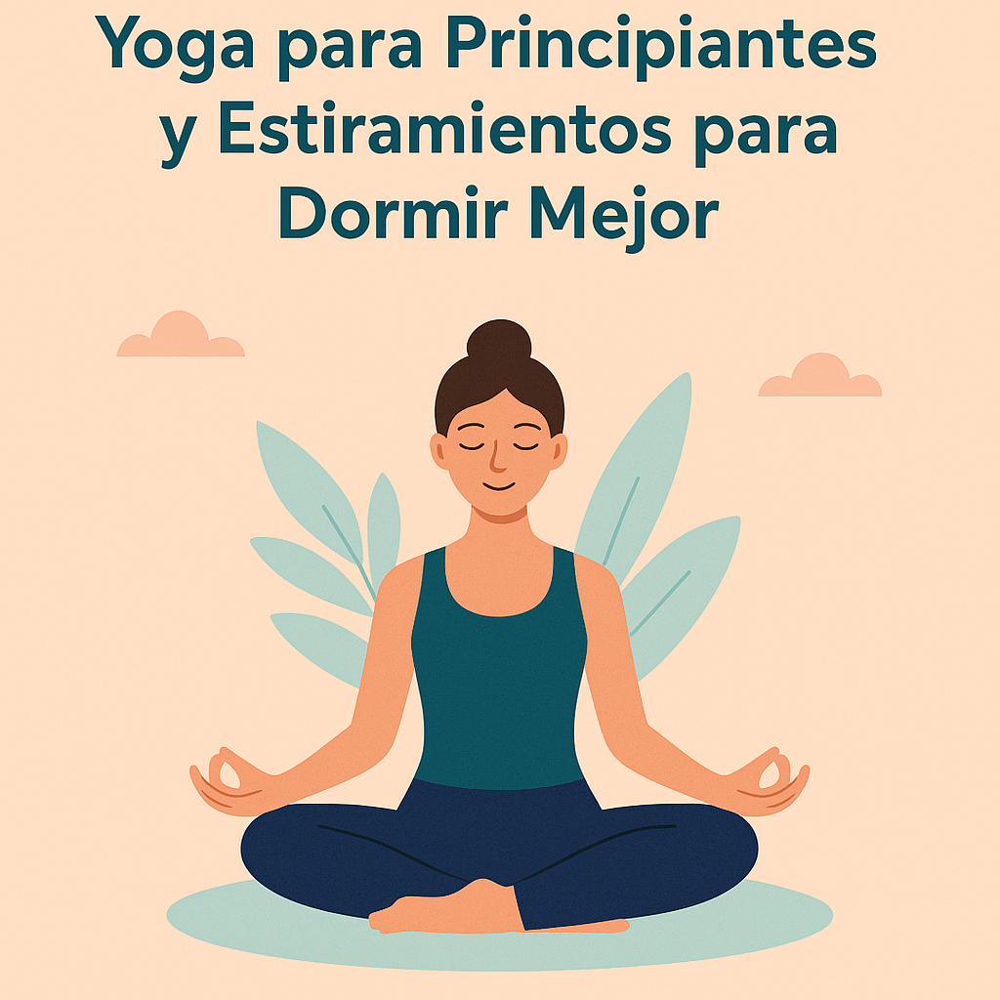

Yoga para Principiantes y Estiramientos para Dormir Mejor y Despertar con Energía
Practicar yoga para principiantes y sumar estiramientos antes de dormir o al despertar es una forma sencilla y poderosa de cuidar tu bienestar mental y físico cada día. Si estás empezando o quieres retomar una rutina de autocuidado, aquí encontrarás posturas de yoga relajantes, ejercicios de yoga para dormir mejor y estiramientos matutinos fáciles de aplicar.
Respira profundo, ponte ropa cómoda y anímate a crear un pequeño ritual de paz para tu cuerpo y tu mente.
Beneficios del yoga para relajación y sueño
Hacer yoga regularmente no solo mejora la flexibilidad: también calma la mente y reduce la tensión acumulada. Entre los beneficios del yoga para la ansiedad y el insomnio destacan:
- Disminuye la actividad del sistema nervioso simpático (el de alerta y estrés).
- Libera tensión muscular acumulada en cuello, espalda y caderas.
- Ayuda a dormir más rápido y a tener un sueño más profundo.
- Fomenta un momento de conexión contigo mismo antes de dormir o al despertar.
Si combinas estas prácticas con respiración consciente y una actitud de autocuidado, notarás cambios en pocas semanas.
Posturas de yoga para antes de dormir
¿No sabes cómo hacer yoga antes de dormir paso a paso? Aquí tienes algunas posturas de yoga relajantes ideales para tu rutina nocturna:
1️⃣ Postura del niño (Balasana)
- Arrodíllate y siéntate sobre tus talones.
- Inclina el torso hacia adelante apoyando la frente en el suelo.
- Extiende los brazos al frente o déjalos a los lados.
- Respira profundo durante 1 a 2 minutos.
2️⃣ Piernas en la pared (Viparita Karani)
- Siéntate de lado junto a una pared.
- Gira tu cuerpo y eleva las piernas apoyándolas rectas en la pared.
- Deja los brazos relajados a los lados.
- Mantén de 3 a 5 minutos respirando lento.
3️⃣ Torsión espinal en el suelo
- Recuéstate boca arriba y dobla las rodillas.
- Deja caer ambas piernas hacia un lado y gira la cabeza hacia el lado contrario.
- Siente cómo se relaja la zona lumbar.
- Mantén 1 minuto por lado.
Estas posturas de yoga para reducir estrés son ideales para relajar el sistema nervioso y preparar el cuerpo para el descanso.
Estiramientos matutinos para despertar el cuerpo
Al despertar, unos minutos de estiramientos matutinos ayudan a activar músculos y mente. Estos ejercicios de estiramiento al despertar sin salir de la cama te encantarán:
1️⃣ Estiramiento de gato-vaca (Cat-Cow)
- Apoya rodillas y manos sobre la cama.
- Inhala arqueando la espalda (cabeza arriba), exhala redondeando la espalda (cabeza hacia el pecho).
- Repite lento 5-8 veces.
2️⃣ Estiramiento lateral acostado
- Acuéstate boca arriba, entrelaza los dedos sobre la cabeza.
- Llévalos suavemente hacia un lado y siente cómo se estiran los costados.
- Cambia de lado después de 30 segundos.
3️⃣ Rodillas al pecho
- Recuéstate boca arriba y abraza las rodillas contra el pecho.
- Balancea suavemente de lado a lado para masajear la zona lumbar.
- Mantén 1 minuto respirando profundo.
Estos estiramientos te ayudarán a liberar rigidez y empezar el día con mejor energía.
Consejos de respiración profunda y mindfulness
Para complementar tu rutina, añade unos minutos de respiración profunda y mindfulness:
- Siéntate o recuéstate cómodo.
- Inhala por la nariz contando 4 segundos.
- Retén la respiración 2 segundos.
- Exhala suave por la boca contando 6 segundos.
- Repite durante 5 minutos.
Practicar respiración consciente y atención plena antes de dormir o al despertar potencia los efectos del yoga y los estiramientos.
Tip extra: Combina estas técnicas con música relajante o una meditación guiada para dormir mejor.
Conclusión motivadora
El yoga y los estiramientos no necesitan ser complicados. Empieza con pocos minutos cada día y verás cómo tu cuerpo y mente lo agradecerán.
Si quieres profundizar, haz nuestro Test de Bienestar Mental y descubre más prácticas para tu autocuidado.
Recuerda: tu momento de paz es tu mejor inversión diaria. Respira, estira, conecta contigo… y repite mañana. 💚
